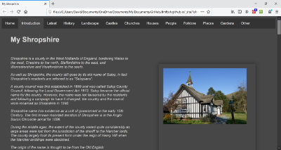
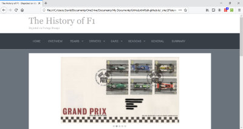

This site comprises two sub-sites, listed below - click on the image to enter.
Shropshire |
Formula 1 |
||
|  |  | ||
The Shropshire sub-site uses my photographs to explore the History of Shropshire and other items of interest relating to the county. |
The F1 Stamps sub-site uses my stamp collection to depict the History of Formula 1. |
||